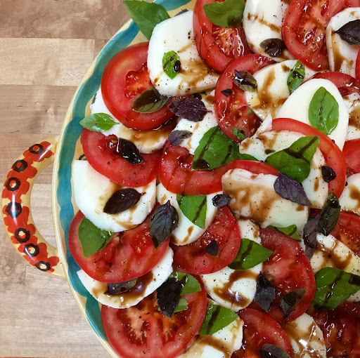

Tomato Salad

Description
A delicious Mediterranean salad with minimal dressing cause the tomatoes are so dang good.
Ingredients
- 1-2 tomatoes chopped into thin circular slices
- Equal amount of mozarella chopped into thin circular slices
- Salt and pepper
- Basil (or basil-infused olive oil!)
- Your favourite olive oil (I recommend AOP de Nîmes)
Steps
What counts as a tomato salad is pretty loosely defined.
You can really season as you see fit, and include as much or little mozarella as you like.
The only essential, really, is a good tomato.
- Chop your ingredients (tomatoes, mozarella and basil)
- Arrange them in a pretty circle on a plate
- Drizzle with balsamic vinegar and olive oil (if using a basil infusion, drizzle this and don't add basil)
- Season with salt, pepper and basil to taste
- Enjoy!
Home